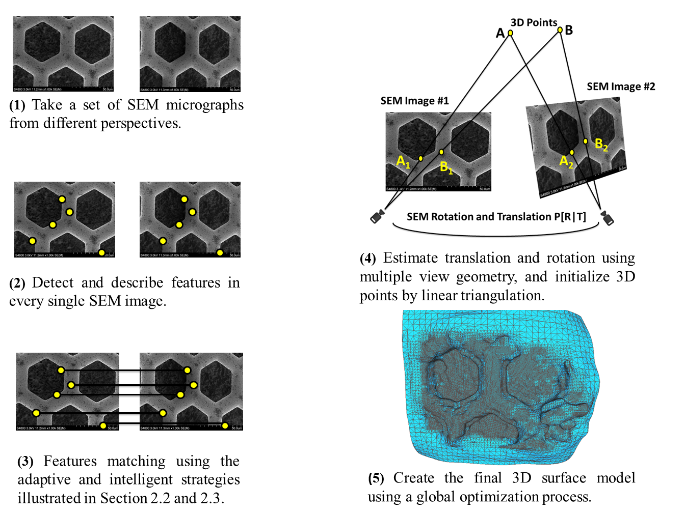
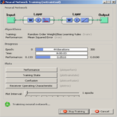
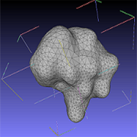
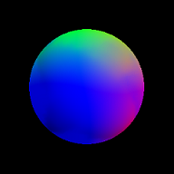
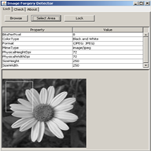
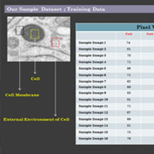
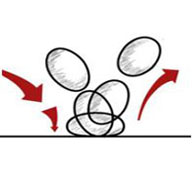
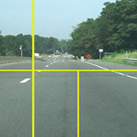
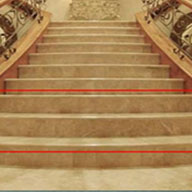
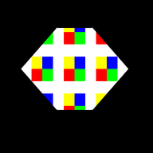

| Biography | | | Education | | | CV | | | Publications | | | Research Projects | | | Book Chapter | | | Photo Gallery | | | Contact |
Research Interests:
3D Computer Vision
Machine Learning
Text Mining
Big Data
3D Computer Vision
Machine Learning
Text Mining
Big Data
Research Projects
SparkText: A Big Data Toolset for Large Scale Biomedical Text Mining
Ahmad P. Tafti, Zhan Ye, Karen Y. He, Kai Wang, Max M. He
A large number of biomedical research articles are published every day, accumulating rich information, such as genetic variants, genes, phenotypes, diseases, and treatments. Rapid yet accurate text mining on large-scale scientific literature can discover novel knowledge to better understand human diseases, and to improve the quality of disease diagnosis, prevention, and treatment. In this project, we designed and developed an efficient text mining framework called "SparkText" on a Big Data infrastructure, which is composed of Apache Spark data streaming and machine learning algorithms, combined with Apache Cassandra NoSQL database. The SparkText is designed for mining large-scale scientific articles published on multiple journals. To demonstrate its performance for classifying cancer types, we extracted information (e.g., breast, prostate, and lung cancers) from thousands of articles, and then employed three different classification algorithms, including Naive Bayes, SVM, and Logistic Regression, to build prediction models. Compared to other tools that took more than 10 hours to mine the 27,001 full text articles, SparkText took about 5 minutes to mine the same dataset. The SparkText can be extended to other areas of biomedical research.

3DSEM++: adaptive and intelligent 3D SEM surface reconstruction
Ahmad P. Tafti, Jessica D. Holz, Ahmadreza Baghaie, Heather A. Owen, Max M. He, Zeyun Yu
Structural analysis of microscopic objects is a longstanding topic in several scientific disciplines, such as biological, mechanical, and materials sciences. The scanning electron microscope (SEM), as a promising imaging equipment has been around for decades to determine the surface properties (e.g., compositions or geometries) of specimens by achieving increased magnification, contrast, and resolution greater than one nanometer. Whereas SEM micrographs still remain two-dimensional (2D), many research and educational questions truly require knowledge and facts about their three-dimensional (3D) structures.
3D surface reconstruction from SEM images leads to remarkable understanding of microscopic surfaces, allowing informative and qualitative visualization of the samples being investigated. In this contribution, we integrate several computational technologies including machine learning, contrario methodology, and epipolar geometry to design and develop a novel and efficient method called 3DSEM++ for multi-view 3D SEM surface reconstruction in an adaptive and intelligent fashion. The experiments which have been performed on real and synthetic data assert the approach is able to reach a significant precision to both SEM extrinsic calibration and its 3D surface modeling.
SeLibCV: A Service Library for Computer Vision Researchers
Ahmad P. Tafti, Hamid Hassannia, Dee Piziak, Zeyun Yu
Computer vision as a computational technology has made a big advance in many scientific disciplines including biomedical, industrial, social, and natural sciences. Most of the computer vision algorithms are complicated in code, and their implementations are available for only a few platforms. This operational restriction causes various difficulties to utilize them, and even more, it makes different challenges to establish novel experiments and develop new research ideas. The overall objective of the SeLibCV is to provide a Software as a Service (SaaS) library for computer vision researchers worldwide that facilitates Rapid Application Development (RAD), and provides application-to-application interaction by tiny services available on the Internet. An Internet connection is all we need! The main functionality of the SeLibCV covers a wide range of computer vision algorithms including image processing, features extraction, object detection, and 3D surface reconstruction.
SeLibCV is an ongoing research project developing by the Biomedical Modeling and Visualization Laboratory in Computer Science Department at University of Wisconsin-Milwaukee, USA.
3DSEM: A 3D Microscopy Dataset
Ahmad P. Tafti, Andrew B. Kirkpatrick, Jessica Holz, Heather A. Owen, Zeyun Yu
The Scanning Electron Microscope (SEM) as 2D imaging instrument has been widely used in biology, mechanical, and materials sciences to determine the surface attributes (e.g., compositions or geometries) of microscopic specimens. A SEM offers an excellent capability to overcome the limitation of human eyes by achieving increased magnification, contrast, and resolution greater than 1 nanometer. However, SEM micrographs still remain two-dimensional (2D). Having truly three-dimensional (3D) shapes from SEM micrographs would provide anatomic surfaces allowing for quantitative measurements and informative visualization of the objects being investigated. In biology, for example, 3D SEM surface reconstruction would enable researchers to investigate surface characteristics and recognize roughness, flatness, and waviness of a biological structure. There are also various applications in material and mechanical engineering in which 3D representations of material properties would allow us to accurately measure a fractal dimension and surface roughness and design a micro article which needs to fit into a tiny appliance.
3D SEM surface reconstruction employs several computational technologies, such as multi-view geometry, computer vision, optimization strategies, and machine learning to tackle the inverse problem going from 2D to 3D. In this contribution, an attempt is made to provide a 3D microscopy dataset along with the underlying algorithms publicly and freely available for the research community.
An Optimized Multi-View Framework for 3D Microscopy Vision
Ahmad P. Tafti, Andrew B. Kirkpatrick, Heather A. Owen, Zeyun Yu
The Scanning Electron Microscope (SEM) as 2D imaging equipment has been widely used in biology and material sciences to determine the surface attributes of a microscopic object. Having 3D surfaces from SEM images would provide true anatomic shapes of micro samples which allow for quantitative measurements and informative visualization of the systems being investigated. In this contribution, we present a Differential Evolutionary (DE) approach for both SEM extrinsic calibration and 3D SEM surface reconstruction. We show that the SEM extrinsic calibration and its 3D shape model can be accurately estimated in a global optimization platform. Several experiments from various perspectives are performed on real and synthetic data to validate the speed, reliability and accuracy of the proposed system. The present work is expected to stimulate more interest and draw attentions from the computer vision community to the fast-growing SEM application area. We developed several parts of the proposed method in Java2SE 7.
Metacarpal Bones Localization in X-ray Imagery Using Particle Filter Segmentation
Z. Bárdosi, D. Granata, G. Lugos, Ahmad P. Tafti, S. Saxena
Statistical methods such as sequential Monte Carlo Methods were proposed for detection, segmentation and tracking of objects. A similar approach, called Shape Particle Filters was introduced for the segmentation of vertebra, lungs and hearts. In this research project, a global shape and a local appearance model are derived from specific object annotated X-ray images of the metacarpal bones. In the test data a unique labeling of the bone boundary and the background points and a manual annotation is given. Using a set of local features (Haar-like) in the neighborhood of each pixel a probabilistic pixel classifier is built using the random forest algorithm. To fit the shape model to a new image, a label probability map is extracted and then the optimal shape is obtained by maximizing the probability of each landmark with the Differential Evolution algorithm.
Source code (Matlab) is available here. The project directory contains Matlab scripts that were used to implement the particle filter segmentation. To clean start, please read the "readme" file located in the project directory.

Machine-Written Character Recognition
Mahya Sheikhzadeh, Ahmad Pahlavan Tafti
Machine-Written character recognition is one among the abilities of a computer to recognize input characters from external sources such as e-forms, e-letters, and e-documents. The field of character recognition can make appropriate ways to regenerate such a text format from official electronic documents, providing textual information for different enterprise class applications such as G-2-G, B-2-B, and B-2-C. Artificial Neural Networks expose a great ability to interpret intelligible the input machine-written characters to digitized characters which could be stored in a computer file for further processing purposes. The objective of this research project is to implement an offline machine-written system for lower case English characters. We show that a machine-written character recognition system could be implemented using supervised classification approach. Several experiments on performed on synthetic data to validate the speed and accuracy of the proposed method. Source code (Matlab) is available here.

3D Interactive Polygon Viewer
Ahmad Pahlavan Tafti
In this project, I was asked to set up a 3D interactive polygon viewing using OpenGL functions. I should load a 3D polygon defined by a triangular mesh (.OFF format), calling OpenGL functions to manipulate the polygon. These include translation, rotation, and scaling, all controlled by the left button of the mouse. If the key ‘t’ is hit, then moving the mouse with left button pressed will translate the object. Similarly the key ‘r’ and ‘s’ will initiate rotation and scaling if the left mouse button is pressed and the mouse moves. Another goal in this project was to create menus and invoke associated actions. Source code (C++ & OpenGL) is available here.

3D Surface Reconstruction Using Photometric Stereo Approach
Ahmad Pahlavan Tafti, Z. Alavi
3D surface reconstruction has been proposed as a technique by which an object in the real world can be reconstructed from a set of only 2D digital images. This rubric is very useful in many applications including robot navigation, terrain modeling, remote surgery, shape analysis, computer interaction, scientific visualization, movie making, and computer aided design. In this work, we studied photometric stereo approach as a single view 3D reconstruction technique, performed experimental validations on synthetic data. Matlab implementation is also availble here.

Digital Images Forgery Detection System Using Data Embedding in Spatial Domain
Ahmad Pahlavan Tafti, M. V. Malakooti, M. Ashourian
Digital images forgery detection is still an active research in image analysis projects. A reliable approach for RGB digital image forgery detection is implemented in this project. Our method is based on the Singular Value Decomposition (SVD) of the original image in which the features of the image is extracted and then pushed into cellular automata to generate the Robust Secret Key for the image authentication. SVD is used as a strong mathematical tool to decompose the RGB Digital Image into three orthogonal matrices and create features that are rotation invariant. Source code (Java) is available here.

Human Cell Detection in Microscopy Images
Ahmad Pahlavan Tafti, M. V. Malakooti, H. Naji
Automatic detection of human cell is one of the most common investigation methods that may be used as part of a computer aided medical decision making system. In this project we develop an efficient algorithm based on the cluster analysis and the vector quantization techniques for human cell detection in microscopic images. Accuracy rate of detection in this project is about 86%.

Key-Frame Animation
Ahmad P. Tafti
In this project, I implemented a key-frame animation with the following specification: I sould define two key frames either in the source code or with a GUI. I must specify the translation, scaling and rotation parameters from the first key-frame (t = 0) to the second key-frame (t = 1). I used linear interpolation to interpolate the translation vector and scaling factor between the two key-frames, by assuming the initial translation vector as (0, 0, 0) and initial scaling factor as 1. Source code (C++ & OpenGL) is available here.

2D DFT in Image Filtering
Ahmad P. Tafti, L. Zhang
In this project, we were asked to implement the discrete Fourier transform
F(u, v) of an input image f(x, y) of size M*N and then apply the ideal low
pass filter H(u, v) to smoothing the image. Firts we needed to zero-pad our original image to generate a new image of
size P*Q, where P=2M-1 and Q=2N-1, multiply the original image by (-1)^(x+y) so that the low
frequency of F(u, v) is centered at the center of our domain. Source code (Matlab) is available here.

Direct Route and Path Management for Driverless Vehicles
Ahmad P. Tafti
Direct route and path management is one of the fundamental subsystems for a driverless vehicle. Automakers are looking at ways they could make cars safer by taking driving out of human hands. Auto and self driving cars could offer other benefits; they could reduce the time lost to traffic jams by and reduce CO2 emissions and also fuel consumption. This research project has focused on just direct path management of a supposed driverless vehicle based on machine vision techniques and algorithms. Source code (Matlab) is also available here.

Detection and Localization of Stair for Robotic Purposes
Ahmad P. Tafti, D. Jalali, H. Alizadeh
This research project develops a method to detect staircase for blind persons and robotic purposes. Histogram equalization, Sobel edge detection algorithm and Fourier Transform by considering a minimal pixel threshold are used in this project. The accuracy is about 81.3%. Matlab code and sample dataset would be available by e-mail.

Slit Lamp Imaging
S. Sagheb, Ahmad P. Tafti
Slit lamp imaging is the photography of the structures of the eye with a specially designed horizontally mounted microscope. Analyzing of conjunctival blood vessel is an important work for the investigation of some diseases. In this study, we have evaluated the relationships between grade of diabetic retinopathy and density of the upper conjunctival vessels through image processing techniques. Image restoration and segmentation were used in this research project. A ridge-based algorithm was used to vessels segmentation. The results of our method showed that our results have more than 91% for true positive rate.

Interactive Polygon Filling
A. Pahlavan Tafti
In this project, I was asked to implement a polygon-fill algorithm in OpenGL. The following specifications should be taken into consideration: 1) Should display everything in a window of 450 * 450 pixels. 2) Should also draw a polygon in this window using OpenGL function. I was given the mask, defined by nine blocks including one in red, one in green, one in blue, one in yellow, and five in white. The size of the mask is 90*90 pixels. Source code (C++ & OpenGL) is available here.
Ahmad Pahlavan Tafti Personal WebSite. All Right Reserved 2013
Support & Design By webicdesign.net